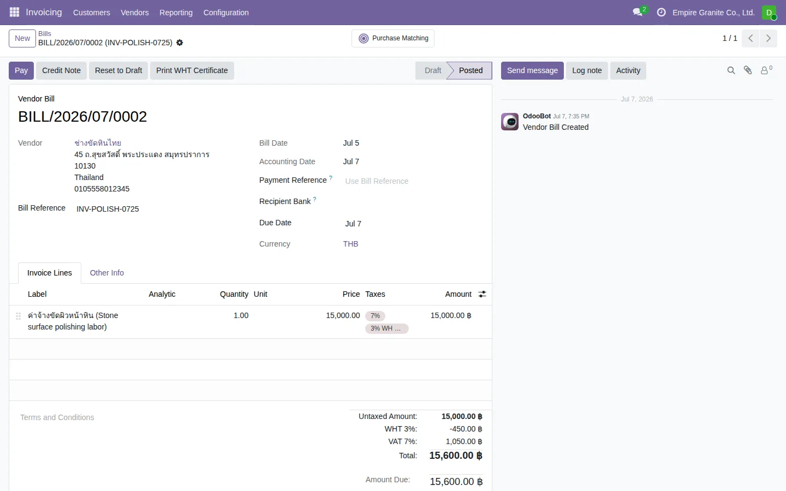
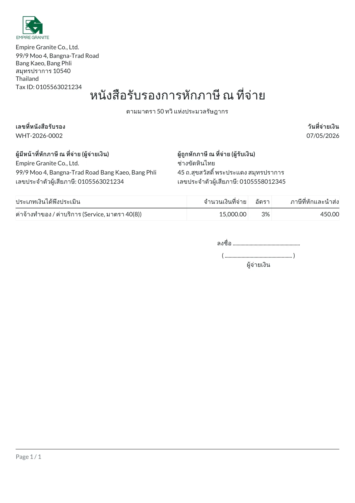

เวลาบริษัทจ่ายเงินค่าบริการ/ค่าเช่า/ค่าจ้างทำของให้ผู้รับเงิน แล้วต้องหักภาษี ณ ที่จ่าย ตามกฎหมาย กฎหมายไทยกำหนดให้ผู้จ่ายเงินต้องออก หนังสือรับรองการหักภาษี ณ ที่จ่าย (แบบ 50 ทวิ) ให้ผู้รับเงินไว้เป็นหลักฐาน — ระบบพิมพ์เอกสารนี้ให้อัตโนมัติจากบิลผู้ขายที่ Post แล้ว ไม่ต้องไปกรอกฟอร์มแยกต่างหาก
ข้อสำคัญ: อัตราภาษีหัก ณ ที่จ่ายมีอยู่ในระบบอยู่แล้ว (1%, 2%, 3%, 5% ทั้งแบบนิติบุคคล/PND53 และบุคคลธรรมดา/PND3) เป็นของมาตรฐาน Odoo (l10n_th) ที่ผูกบัญชี "ภาษีหัก ณ ที่จ่ายค้างนำส่ง" ไว้ถูกต้องอยู่แล้ว — สิ่งที่เพิ่มเข้ามาคือปุ่มพิมพ์เอกสารเท่านั้น
ภาพรวม Flow
1. เลือกภาษีหัก ณ ที่จ่ายตอนบันทึกบิล
ไม่ต้องตั้งค่าอะไรเพิ่ม — อัตราที่มีอยู่แล้วในระบบครอบคลุมเคสที่ใช้บ่อย:
| อัตรา | ใช้กับ |
|---|---|
| 1% | ค่าขนส่ง |
| 2% | ค่าโฆษณา |
| 3% | ค่าจ้างทำของ/ค่าบริการ |
| 5% | ค่าเช่า |
แต่ละอัตรามี 2 เวอร์ชัน — นิติบุคคล (PND53) กับบุคคลธรรมดา (PND3) — เลือกให้ตรงกับสถานะผู้รับเงิน
2. บันทึกบิลผู้ขาย
ตัวอย่างจริง: บิลค่าจ้างขัดผิวหน้าหินจาก "ช่างขัดหินไทย" (บุคคลธรรมดา รับจ้างบริการ) — ฿15,000 + VAT 7% หัก WHT 3%

ผลลัพธ์ทางบัญชีที่ถูกต้อง: ยอดที่ต้องจ่ายจริง (Amount Due) จะถูกหักลบด้วยยอด WHT ให้อัตโนมัติ — ระบบตัด Trade Payables ออก (ยอดรวม + VAT − WHT) พร้อมลงบัญชี "ภาษีหัก ณ ที่จ่ายค้างนำส่ง" แยกไว้อีกบัญชีหนึ่ง ตรงตามหลักบัญชีภาษีไทยเป๊ะ ไม่ต้องปรับเอง
3. พิมพ์หนังสือรับรอง
เมื่อบิล Post แล้ว ปุ่ม "Print WHT Certificate" จะโผล่ที่แถบปุ่มด้านบนฟอร์ม (ข้าง Pay/Credit Note) — กดแล้วระบบจะสร้าง PDF ให้ทันที โดยดึงข้อมูลจากบิลมาใส่ให้ครบทุกช่องอัตโนมัติ:

ข้อมูลที่กรอกให้อัตโนมัติ:
| ช่องในเอกสาร | ที่มา |
|---|---|
| เลขที่หนังสือรับรอง | เลขรันอัตโนมัติ (ดูหัวข้อ 4) |
| วันที่จ่ายเงิน | วันที่ในบิล (Invoice Date) |
| ผู้จ่ายเงิน (ชื่อ/ที่อยู่/เลขผู้เสียภาษี) | ข้อมูลบริษัทของบิลนั้น |
| ผู้รับเงิน (ชื่อ/ที่อยู่/เลขผู้เสียภาษี) | Vendor ในบิล |
| ประเภทเงินได้ | เดาจากชื่อภาษีที่เลือก (ดูคำเตือนด้านล่าง) |
| จำนวนเงิน/อัตรา/ภาษีที่หัก | คำนวณจากบรรทัดสินค้าที่มีภาษีหัก ณ ที่จ่าย |
4. เลขที่หนังสือรับรอง (เลขรัน)
เลขที่ขึ้นต้นด้วย WHT- ตามด้วยปีและเลขรัน (เช่น WHT-2026-0002) — เป็นเลขรันกลางไม่แยกตามบริษัท (ต่างจากเลขที่ใบแจ้งหนี้/PO ที่แยกเลขรันตามบริษัท) เพราะหนังสือรับรองไม่จำเป็นต้องมีเลขแยกเป็นชุดต่อบริษัทตามกฎหมาย และการทำแบบนี้ยังกันปัญหาเลขรันสร้างผิดบริษัทแบบที่เคยเจอกับเอกสารอื่นในระบบด้วย